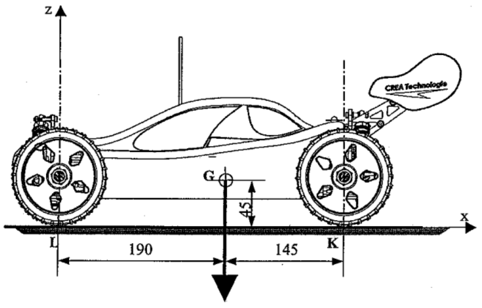

Dynamique translation
Etude du comportement dynamique d'un solide en translation rectiligne#
Aspects cinématiques#
Paramétrage du modèle glissière#

Equations horaires du mouvement uniforme#
...
...
...
Equations horaires du mouvement uniformément varié#
...
...
...
...
Application de cours : Etude du comportement dynamique d’un treuil

La figure ci-dessus représente un treuil. Un moto réducteur, non représenté, entraîne en rotation le tambour 1, sur lequel s’enroule le câble 2 et permet ainsi de lever la charge 3.
La charge de masse \(m = 10 kg\) est soulevée en trois phases décrites par le graphe des vitesses ci-dessous :

- Caractériser le mouvement de la charge pour chacune des trois phases.
Application : T2M Buggy Black Pirate


Le Black Pirate est un Buggy tout terrain 1/8, 4x4, 3 différentiels, à propulsion électrique Brushless :
- Vitesse maxi : \(70 km/h\) environ
- Accélérations phénoménales : \(1,5 \times g\) !!
- La masse totale du buggy est \(m = 3,60 kg\)
Q1) Analyse des performaces annoncées par le constructeur#
- Calculer le temps que mettrait le buggy pour atteindre sa vitesse maximale
Q2) Comparaison avec les performances relevées sur piste#
Lors d’un essai sur piste de terre, une mesure de vitesse a été effectuée ; Sur une ligne droite, voiture à l’arrêt, nous effectuons une accélération pour atteindre la vitesse maximale, suivi d’un maintien de la vitesse, puis suivi d’un freinage jusqu’à l’arrêt complet.

- Repérer sur les graphes les différentes phases (étapes) de l’essai effectué ;
- Relever la valeur de la vitesse maximale atteinte et en déduire l’accélération au démarrage :
- Comparer avec les performances annoncées.
Principe fondamental de la dynamique#
Théorème de la résultante dynamique
La somme vectorielle des actions mécaniques extérieures appliquées à un solide \(S\) en mouvement de translation par rapport à un repère absolu \(R = (O, \overrightarrow{x}, \overrightarrow{y}, \overrightarrow{z})\) est égale au produit de la masse de ce solide par l’accélération de son centre de gravité \(G\).
...
...
...
... Unités :
Théorème du moment dynamique résultant
La somme vectorielle des moments des actions mécaniques extérieures appliquées à un solide \(S\) en mouvement de translation par rapport à un repère absolu \(R = (O, \overrightarrow{x}, \overrightarrow{y}, \overrightarrow{z})\) est nulle à son centre de gravité G.
...
...
...
...
Unités :
Remarque
- le théorème du moment implique que la résultante des actions mécaniques extérieures passe par \(G\), sinon son moment par rapport à \(G\) n’est pas nul.
- Les cas de l’équilibre statique ou lorsque le mouvement est uniforme sont des cas particuliers de la dynamique (cas où l’accélération est nulle).
Application de cours : Etude du comportement dynamique d’un treuil
La figure ci-dessus représente un treuil. Un moto réducteur, non représenté, entraîne en rotation le tambour 1, sur lequel s’enroule le câble 2 et permet ainsi de lever la charge 3.
La charge de masse \(m = 10 kg\) est soulevée en trois phases décrites par le graphe des vitesses ci-dessous :
- Isoler la charge et déterminer la tension du câble pour chaque phase en considérant l'accélération de la pesanteur \(g=10 m/s^2\).
Application : T2M Buggy Black Pirate
Le Black Pirate est un Buggy tout terrain 1/8, 4x4, 3 différentiels, à propulsion électrique Brushless :
- Vitesse maxi : \(70 km/h\) environ
- Accélérations phénoménales : \(1,5 \times g\) !!
- La masse totale du buggy est \(m = 3,60 kg\)

Q3) Etude du phénomène de « transfert de charge » et détermination du coefficient d’adhérence#
- Déterminer la répartition de la charge sur les roues arrière et avant lorsque le véhicule accélère ;
- Qu’en est-il lorsque le véhicule est à vitesse constante ?
- Déterminer le coefficient d’adhérence nécessaire pour transmettre une telle accélération ;
- A partir de quelle accélération risque-t-on de cabrer ?
- Discuter si les phénomènes de transfert de charge et de cabrage sont bénéfiques à la propulsion et/ou à la traction d’un véhicule automobile…
BAME sur (S) = le buggy#
-
\(\overrightarrow{P} = - m \times g \cdot \overrightarrow{y} \)
-
\(\overrightarrow{K_{sol \to S}} = -\|\overrightarrow{K_{sol \to S}}\| \times \sin{\alpha} \cdot \overrightarrow{x} + \|\overrightarrow{K_{sol \to S}}\| \times \cos{\alpha} \cdot \overrightarrow{y} \)
-
\(\overrightarrow{L_{sol \to S}} = -\|\overrightarrow{L_{sol \to S}}\| \times \sin{\alpha} \cdot \overrightarrow{x} + \|\overrightarrow{L_{sol \to S}}\| \times \cos{\alpha} \cdot \overrightarrow{y} \)
Résultante dynamique : \(\sum\overrightarrow{F_{ext \to S}} = m \cdot \overrightarrow{a_G}\)#
-
en projection sur \(\overrightarrow{x}\) : \(-\|\overrightarrow{K_{sol \to S}}\| \times \sin{\alpha} -\|\overrightarrow{L_{sol \to S}}\| \times \sin{\alpha} = - m \times a_G\) (1)
-
en projection sur \(\overrightarrow{y}\) : \(\|\overrightarrow{K_{sol \to S}}\| \times \cos{\alpha} +\|\overrightarrow{L_{sol \to S}}\| \times \cos{\alpha} = m \times g\) (2)
Moment dynamique résultant en G : \(\sum\overrightarrow{M_G(\overrightarrow{F_{ext \to S}})} = \overrightarrow{0}\)#
- en projection sur \(\overrightarrow{z}\) : \( - x_{LG} \times \|\overrightarrow{L_{sol \to S}}\| \times \cos{\alpha} - y_{LG} \times \|\overrightarrow{L_{sol \to S}}\| \times \sin{\alpha} + x_{GK} \times \|\overrightarrow{K_{sol \to S}}\| \times \cos{\alpha} - y_{KG} \times \|\overrightarrow{K_{sol \to S}}\| \times \sin{\alpha} = 0\) (3)
Déterminer la répartition de la charge sur les roues arrière et avant lorsque le véhicule accélère ;#
(1) => \(\|\overrightarrow{L_{sol \to S}}\| \times \sin{\alpha} = m \times a_G -\|\overrightarrow{K_{sol \to S}}\| \times \sin{\alpha} \)
(2) => \(\|\overrightarrow{L_{sol \to S}}\| \times \cos{\alpha} = m \times g - \|\overrightarrow{K_{sol \to S}}\| \times \cos{\alpha} \)
avec \( x_{LG} = 190 \), \( y_{LG} = 45 \), \( x_{GK} = 145 \), \( y_{KG} = 45 \)
(3) => \( - 190 \times (m \times g - \|\overrightarrow{K_{sol \to S}}\| \times \cos{\alpha}) - 45 \times (m \times a_G -\|\overrightarrow{K_{sol \to S}}\| \times \sin{\alpha}) + 145 \times \|\overrightarrow{K_{sol \to S}}\| \times \cos{\alpha} - 45 \times \|\overrightarrow{K_{sol \to S}}\| \times \sin{\alpha} = 0\)
\( - 190 \times m \times g + 190 \times \|\overrightarrow{K_{sol \to S}}\| \times \cos{\alpha} - 45 \times m \times a_G + 45 \times \|\overrightarrow{K_{sol \to S}}\| \times \sin{\alpha} + 145 \times \|\overrightarrow{K_{sol \to S}}\| \times \cos{\alpha} - 45 \times \|\overrightarrow{K_{sol \to S}}\| \times \sin{\alpha} = 0\)
\( 335 \times \|\overrightarrow{K_{sol \to S}}\| \times \cos{\alpha} = 190 \times m \times g + 45 \times m \times a_G\)
\(\overrightarrow{K_{sol \to S}} \cdot \overrightarrow{y} = \|\overrightarrow{K_{sol \to S}}\| \times \cos{\alpha} = {190 \times m \times g + 45 \times m \times a_G \over 335}\)
alors (2) => \(\overrightarrow{L_{sol \to S}} \cdot \overrightarrow{y} = \|\overrightarrow{L_{sol \to S}}\| \times \cos{\alpha} = {(335-190) \times m \times g - 45 \times m \times a_G \over 335}\)
Pour \(a_G = 1,5 \times g\), on obtient la répartition de la charge en calculant les composantes verticales des actions mécaniques du sol sur chaque roue en K et en L
\(\overrightarrow{K_{sol \to S}} \cdot \overrightarrow{y} = {3,6 \times (190 \times g + 45 \times 1,5 \times g) \over 335} = {3,6 \times 9,81 \times 257,5 \over 335} = 27,15 \;\mathrm{N}\)
\(\overrightarrow{L_{sol \to S}} \cdot \overrightarrow{y} = {3,6 \times (145 \times g - 45 \times 1,5 \times g) \over 335} = {3,6 \times 9,81 \times 77,5 \over 335} = 8,17 \;\mathrm{N}\)
Qu’en est-il lorsque le véhicule est à vitesse constante ?#
Si \(a_G = 0\) alors
(1) => \(-\|\overrightarrow{K_{sol \to S}}\| \times \sin{\alpha} -\|\overrightarrow{L_{sol \to S}}\| \times \sin{\alpha} = 0\)
donc \(\sin{\alpha} = 0\) et \(\cos{\alpha} = 1\)
On retrouve la même répartition que lorsque le véhicule est à l'arrêt
\(\|\overrightarrow{K_{sol \to S}}\| = {190 \times m \times g \over 335} = {190 \times 3,6 \times 9,81 \over 335} = 20,03 \;\mathrm{N}\)
\(\|\overrightarrow{L_{sol \to S}}\| = {145 \times m \times g \over 335} = 15,27 \;\mathrm{N} \)
Déterminer le coefficient d’adhérence nécessaire pour transmettre une telle accélération#
(1) => \(\sin{\alpha} = {m \times a_G \over {\|\overrightarrow{K_{sol \to S}}\| + \|\overrightarrow{L_{sol \to S}}\|}}\)
(2) => \(\cos{\alpha} = {m \times g \over {\|\overrightarrow{K_{sol \to S}}\| + \|\overrightarrow{L_{sol \to S}}\|}}\)
donc \( \tan{\alpha} = {a_G \over g} = {{1,5 \times g} \over g} \) doit être le coefficient d'adhérence minimale (ce qui implique l'utilisation de "crampons")
A partir de quelle accélération risque-t-on de cabrer ?#
On cabre dès que \(\|\overrightarrow{L_{sol \to S}}\| = 0\)
alors (3) => \(145 \times \|\overrightarrow{K_{sol \to S}}\| \times \cos{\alpha} - 45 \times \|\overrightarrow{K_{sol \to S}}\| \times \sin{\alpha} = 0\)
donc \(145 \times \cos{\alpha} - 45 \times \sin{\alpha} = 0\)
\(145- 45 \times \tan{\alpha} = 0\)
\(\tan{\alpha} = {145 \over 45} = 3,22\)
donc on risque de cabrer à partir de \(a_G > 3,22 \times g\)
Discuter si les phénomènes de transfert de charge et de cabrage sont bénéfiques à la propulsion et/ou à la traction d’un véhicule automobile...#
\(\overrightarrow{L_{sol \to S}} \cdot \overrightarrow{y} = = {145 \times m \times g - 45 \times m \times a_G \over 335}\)
En accélérant, on enlève \({45 \times m \times a_G \over 335} = 7,12 \;\mathrm{N}\) de charge de l'avant que l'on rajoute à l'arrière
\(\overrightarrow{K_{sol \to S}} \cdot \overrightarrow{y} = {190 \times m \times g + 45 \times m \times a_G \over 335}\)
Donc une propulsion est plus favorable qu'une traction en phase d'accélération car la force de pression étant plus grande à l'arrière, pour un coeficient d'adhérence donné, la force de propulsion sera également plus grande proportionnelement tel que \(\|\overrightarrow{T}\| = f \times \|\overrightarrow{N}\|\).